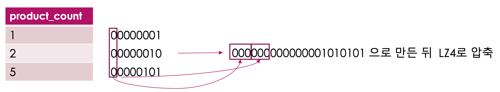
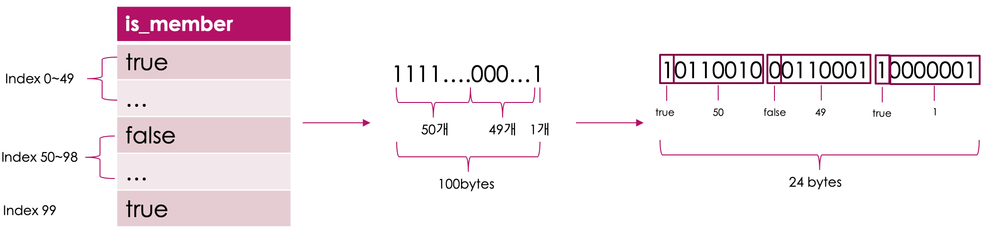

[Kudu] 4. 인코딩과 압축
Kudu에서는 컬럼의 인코딩과 압축을 통해 저장 데이터의 사이즈를 줄여, 디스크 공간을 효율적으로 사용할 수 있도록 하고 있다.
1. 인코딩
인코딩은 테이블 생성 시 컬럼의 정의로 지정할 수 있다.
-- query with impala
CREATE TABLE various_encodings
(
id BIGINT PRIMARY KEY,
c1 BIGINT ENCODING PLAIN_ENCODING,
c2 BIGINT ENCODING AUTO_ENCODING,
c3 TINYINT ENCODING BIT_SHUFFLE,
c4 DOUBLE ENCODING BIT_SHUFFLE,
c5 BOOLEAN ENCODING RLE,
c6 STRING ENCODING DICT_ENCODING,
c7 STRING ENCODING PREFIX_ENCODING
) PARTITION BY HASH(id) PARTITIONS 2 STORED AS KUDU;
1) Plain encoding
인코딩을 하지 않고 원본 데이터 그대로 저장한다.
2) Bitshuffle encoding
비트를 재배치 한 뒤 LZ4 방식으로 압축한다. primary key 로 정렬했을때 값이 반복되거나, 순차적으로 증가/감소 하거나, 일부의 값만 변경이 될때 효율적이다.
 컬럼의 값들을 바이너리스트림 형태로 변경 한 후 LZ4로 압축한다.
3) Run Length encoding
primary key로 정렬 했을때 반복되는 동일한 값을 1개의 값과 반복 횟수만 저장하여 저장크기를 줄이는 인코딩이다.
동일한 값이 연속적으로 저장될 수록 효율적이다.
AAAAABBCCCC ===> A5B2C4 처럼 1개의 값과 반복 횟수만 저장하는 알고리즘이 Run-Length algorithm 이다.

그림과 같이 true 연속적으로 50개, false가 연속해서 49개, 다시 true가 1개 나오는 컬럼이 있다고 가정하자. 이때 true는 1로, false는 0으로 바꿀 수 있으며 이를 연속적으로 표현하면 111111111…(50개)00000…(49개)1 로 표현가능 하다 이를 Run Length알고리즘으로 풀면 1500491 로 표현할 수 있으며 바이트 스트림으로 만들면 그림의 결과가 된다.
4) Dictionary encoding
컬럼의 값으로 Directionary 가 생성되고, 실제 컬럼의 값에는 해당 Dictionary의 인덱스가 저장된다. Dictionary Encoding은 동일한 값이 반복되며, 유니크한 값이 적은 경우 효율적이다.
5) Prefix encoding
공통된 prefix를 갖는 경우, 변경되는 부분만 저장되는 방식이다. 예를 들어 http://krespo.github.io/a.png 와 http://krespo.github.io/b.png 가 저장되는 경우, 각 컬럼의 value는 a.png와 b.png만 저장된다.
{kind=link}
{kind=link}
2. 압축
Kudu에서는 인코딩 이외에 압축을 이용하여 디스크 사용량 및 scan 속도를 효율화 할 수 있다.
압축방식은 LZ4, Snappy, zlib를 사용할 수 있으며, 일반적으로 LZ4 압축이 압축 성능이 좋기 때문에 많이 사용한다.
zlib 압축은 가장 작은 데이터 사이즈로 압축할 수 있기때문에 디스크 사용량을 최대로 줄이고자 한다면 zlib를 사용하면 된다.
-- query with impala
CREATE TABLE blog_posts
(
user_id STRING ENCODING DICT_ENCODING,
post_id BIGINT ENCODING BIT_SHUFFLE,
subject STRING ENCODING PLAIN_ENCODING,
body STRING COMPRESSION LZ4,
spanish_translation STRING COMPRESSION SNAPPY,
esperanto_translation STRING COMPRESSION ZLIB,
PRIMARY KEY (user_id, post_id)
) PARTITION BY HASH(user_id, post_id) PARTITIONS 2 STORED AS KUDU;